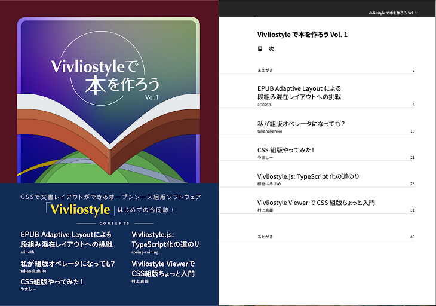
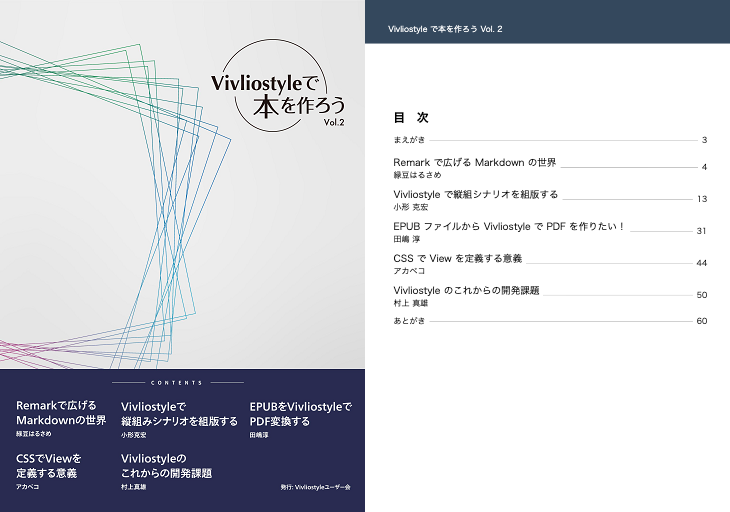
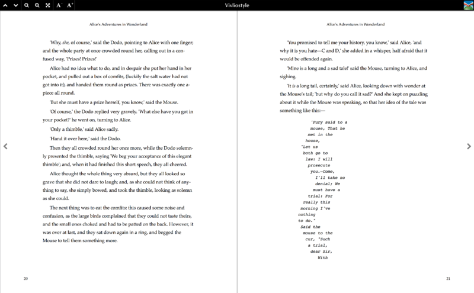

{{ page.title }}
Technical Books
-

Japanese book “Make Books with Vivliostyle, Vol. 1”
Table of contents, running headers, footnotesRelated article (Japanese): 技術書典6に出展『Vivliostyle で本を作ろう Vol. 1』公開！ -

Japanese book “Make Books with Vivliostyle, Vol. 2”
Table of contents, running headers, footnotesRelated article (Japanese): 技術書典7に出展『Vivliostyle で本を作ろう Vol. 2』公開！
Novels
-

Novels from Project Gutenberg
Page margin box, page counter, cross references, responsive page size, web fonts“Alice’s Adventures in Wonderland”
“The Adventures of Sherlock Holmes”
“White Fang”
-

Japanese novel “Gon, the Little Fox”
Vertical text, ruby, page margin box, page counterFixed Page Size
Responsive Page Size
Magazines & Newspapers
-


Web Magazine “JDIR”
Multi-column, responsive design, page templates, table of contents, crop marks and bleed for printHorizontal text
Vertical text
(In this sample, JDIR JBpress Digital Innovation Review's articles are used with permission from Japan Business Press Co., Ltd.) -

“Apollo 8”
Shapes, exclusions, multi-column, page templates, media queries, running headers(from Peter Sorotokin’s Adaptive Layout) -

Japanese magazine “Mt. Shirouma”
Vertical text, multi-column, ruby, page margin boxFixed Page Size
Responsive Page Size
-

Newspaper
Multi-column, responsive design, page templates, cross references
Articles
- Page View for paginated view with online Vivliostyle viewer.
- Raw HTML for normal HTML view.
- Source for source files, HTML/CSS etc., on GitHub.
{% include nav-share.html %}